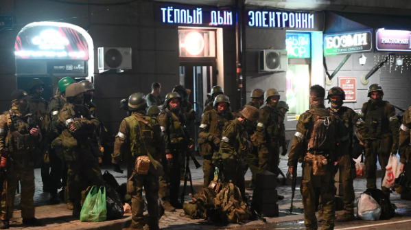

detail.html
26th June, 2023(NLĐO) - Ủy ban Quốc phòng Duma Quốc gia (Hạ viện Nga) đang soạn thảo dự luật về điều chỉnh hoạt động của các công ty quân sự tư nhân (PMC) như Wagner.
Người đứng đầu Ủy ban Quốc phòng Duma Quốc gia (Hạ viện Nga) Andrey Kartapolov nói với truyền thông Nga rằng ủy ban của ông đang soạn thảo dự luật về điều chỉnh hoạt động của các công ty quân sự tư nhân (PMC)
Đài Sputnik dẫn lời ông Kartapolov nói thêm rằng còn quá sớm để bàn về viễn cảnh của công ty quân sự tư nhân Wagner trước những diễn biến mới nhất.
Cuối ngày hôm đó, văn phòng tổng thống Belarus tuyên bố ông Prigozhin đã chấp nhận đề nghị của Tổng thống Belarus Alexander Lukashenko, ngừng tiến quân và thực hiện các bước tiếp theo để giảm leo thang căng thẳng. Ông Prigozhin xác nhận đội quân Wagner trở lại trại dã chiến của họ.
Cùng ngày 26-6, Bộ Quốc phòng Nga thông báo Bộ trưởng Quốc phòng Sergei Shoigu đã kiểm tra sở chỉ huy tiền tuyến của lực lượng Zapad và ra lệnh cho các chỉ huy tiếp tục trinh sát để phát hiện và ngăn chặn kế hoạch của kẻ thù.
Theo đài Sputnik, ông Shoigu nhấn mạnh hiệu quả của việc xác định và phá hủy các thiết bị quân sự cũng như nơi tập trung nhân sự của kẻ thù tại các khu vực chiến thuật thuộc khu vực mà Zapad quản lý.